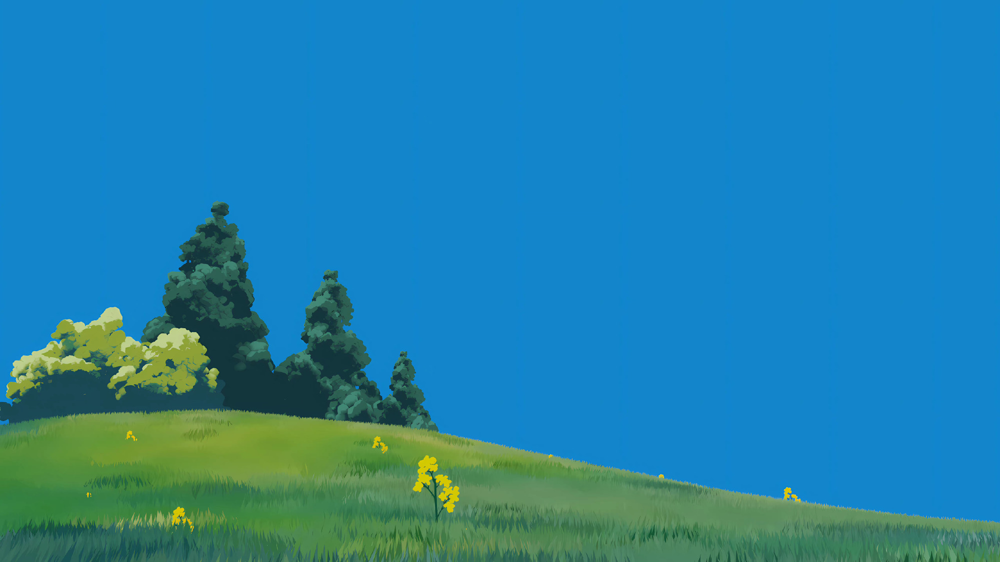

<!DOCTYPE html>
<html lang="en">
  <head>
    <meta charset="UTF-8" />
    <title>NewBee 音频可视化Demo</title>
    <style>
      html,
      body {
        height: 100%;
      }
      body {
        margin: 0;
      }
      #bg {
        position: absolute;
        width: 100%;
        height: 100%;
        left: 0;
        right: 0;
        object-fit: cover;
      }
      #canvas {
        position: absolute;
        left: 50%;
        transform: translateX(-50%);
        bottom: 0;
        pointer-events: none;
      }
      #box {
        position: absolute;
        width: 100px;
        height: 100px;
        top: 100px;
      }
      #audio {
        width: 100%;
        opacity: 0;
      }
      #audio:hover {
        opacity: 1;
      }
    </style>
  </head>
  <body>
    <video id="bg" src="./video.mp4" muted autoplay loop></video>
    <!--  -->
    <canvas id="canvas"></canvas>
    <audio
      id="audio"
      src="https://static.naivetab.com/mp3/time.mp3"
      controls
      crossorigin
    ></audio>
    <div id="box"></div>

    <script>
      const customSort = (arr) => {
        const copyArr = [...arr];
        // 1. 对数组进行升序排序
        copyArr.sort((a, b) => a - b);
        const result = [];
        let times = 0;
        while (copyArr.length) {
          times++;
          [copyArr.pop(), copyArr.pop(), copyArr.pop()]
            .filter((item) => item !== undefined)
            .forEach((el, index) => {
              if (times % 2) {
                index === 0 && result.push(el);
                index === 1 && result.unshift(el);
                index === 2 && result.push(el);
              } else {
                index === 0 && result.unshift(el);
                index === 1 && result.push(el);
                index === 2 && result.unshift(el);
              }
            });
        }

        return result;
      };

      const getMusicRMS = (dataArray) => {
        let sumOfSquares = 0;
        for (let i = 0; i < dataArray.length; i++) {
          sumOfSquares += Math.pow(dataArray[i], 2);
        }
        return Math.round(Math.sqrt(sumOfSquares / dataArray.length));
      };
    </script>

    <script type="text/javascript">
      const audio = document.getElementById("audio");
      audio.volume = 0.15;
      const canvas = document.getElementById("canvas");
      canvas.width = window.innerWidth;
      canvas.height = Math.round(window.innerHeight / 5);
      const box = document.getElementById("box");

      audio.onplay = () => {
        // 创建canvas画布上下文
        const ctx = canvas.getContext("2d");
        // 获取canvas宽高
        const { width: canvasW, height: canvasH } = canvas;

        // 创建一个音频解析分析器，不必纠结原理，反正文档这样写的
        const AudCtx = new AudioContext();
        const src = AudCtx.createMediaElementSource(audio);
        const analyser = AudCtx.createAnalyser();
        src.connect(analyser);
        analyser.connect(AudCtx.destination);

        // 说白了就是控制bar数量的一个参数，但是是他的两倍
        analyser.fftSize = Math.pow(2, 7);
        // bar的个数 fftSize的一半
        const barLen = analyser.frequencyBinCount;

        // 间距宽度
        const dis = 1;
        // 条的宽度
        const barWidth = (canvasW - (barLen - 1) * dis) / barLen;
        let dataArray = new Uint8Array(barLen);

        // 绘制音浪
        const drawVolumeBar = () => {
          // 先清空画板
          ctx.clearRect(0, 0, canvasW, canvasH);
          // 实时获取波形数据
          analyser.getByteFrequencyData(dataArray);
          // 音浪最大值的比例
          const vMaxScale = canvasH / 255;
          // 音波数据不能超过canvas高度
          const barArr = Array.from(dataArray).map(
            (volume) => volume * vMaxScale
          );

          const rms = getMusicRMS(barArr);

          console.log(barArr.filter((item) => !item).length);
          if (rms > 60) {
            box.style.backgroundColor = "red";
          } else {
            box.style.backgroundColor = "";
          }

          ctx.beginPath();
          // 根据波形循环绘制bar
          customSort(barArr).forEach((volume, index) => {
            const vPercent = volume / canvasH;
            // 条的高度就是canvas高度乘以比例即可
            const barHeight = Math.round(canvasH * vPercent);
            // 绘制音浪颜色
            ctx.fillStyle = `rgba(177, 144, 151, ${vPercent + 0.2})`;
            // 绘制条
            ctx.fillRect(
              index * (barWidth + dis),
              canvasH - barHeight,
              barWidth,
              barHeight
            );
          });
          ctx.closePath();
          // 递归调用
          requestAnimationFrame(drawVolumeBar);
        };
        // 绘制音浪
        drawVolumeBar();
      };
    </script>
  </body>
</html>
